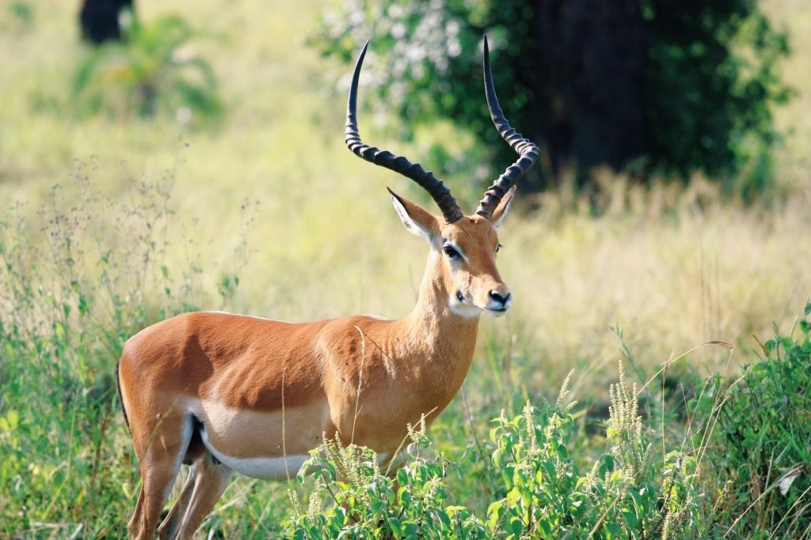

WildLife of Odisha
Home
Protected Areas
About
Feedback
Others
National parks in odihsa
Forest tourist places
National parks in odihsa

CHILIKA LAKE – THE HEAVENLY BEAUTIFUL PIECE OF LAND ON EARTH
The paradise brackish water lagoon of Odisha and dearest hamlet of Dolphins is Chilika Lake. Its spread over three popular districts named Puri, Khurda and Ganjam on the eastern coastal zone of the country India. The bio-diversity and eco-system of this lake is wonderful, it is the home of thousands of astounding animals, prodigious birds and spectacular plants. Also millions of migratory birds come to spend winter season at this kingdom of heaven. Also the Irrawaddy dolphin and Bottlenose dolphins are leaving in this lake those are predominant reasons behind the tourist flow to this destination. In winter season millions of migratory birds coming to Chilika to spend winter so it’s a wonderful opportunity to explore varieties of birds of different countries at a locus at a time. Also the Chilika Lake looks like heavenly kingdom in this season, the islands and sea grant an extremely tremendous look to this place during this season. You can acquire chance to visualize Irrawaddy dolphin and Bottlenose dolphins in Satapada (Home of Irrawaddy dolphins).
OVER VIEW OF CHILIKA’S BEAUTY AND POPULAR TOURIST ATTRACTIONS
Chilika is famous for its extraordinary natural beauty, and here most important tourist attractions are: the Lake itself because it’s the largest brackish water lagoon of India. Along with that Maa Kalijai temple and mandir is the main heritage destination in Chilika, the islands, dolphins, bio-diversity, animals, birds and fish etc.
BEST TIME TO VISIT CHILIKA LAKE
Winter Season is the most preferable time to visit Chilika Lake, from the month September to February is the best time to enjoy in Chilika.
HOW TO REACH CHILIKA LAKE EASILY
By Air: The nearest airport is Bhubaneswar. By Rail: Puri, Khurda and Ganjam districts head rail stations are nearer railway stations to reach Chilika. By Road: Chilika is well connected to various cities of Odisha. So anyone can easily reach this beautiful tourist destination easily.
BHITARKANIKA NATIONAL PARK– A PERFECT DESTINATION FOR TRAVELLING IN ODISHA
Our earth is full of wonders; exciting, inspiring and tremendous piece of lands located around us, such a magnificent land of rare and unmatched beauty is Bhitarkanika National Park. This Park is located in Kendrapara district of the state Odisha, in the country India. From the year 1998 this is designated as a National Park. Bhitarkanika Wildlife Sanctuary, Gahirmatha Beach and Marine Sanctuary lines are the predominant attractions those make this a principal tourist destination for tourist in India. For Saltwater Crocodile (Crocodylus porosus), White Crocodile, Indian python, King Cobra, black ibis, darters and many other species of flora and fauna Bhitarkanika National Park is a like heaven that yield them perfect environment for growth.
THE BEAUTY OF BHITARKANIKA NATIONAL PARK
Gigantic high hills, thick forest with wildlife, stunning waterfalls are the identity of this gorgeous tourist destination, during summer here temperature increases up to 40 °C and in rain season heavy rain fall occurs, so in this season Bhitarkanika National Park contemplate outstanding. The thick and green dense forests of Bhitarkanika with extensive grassy lands are suitable for growth of animals, precipitous and sparkling waterfalls, meandering rivers give this place and wonderful environment, the roaring tigers and trumpeting tuskers, fleeing deer and flying squirrels, talking myna and dancing peacocks etc all wild animals makes it an engaging spot for tourist, thousands of tourist from various places come to this land every year for picnic.
TOURISM IN BHITARKANIKA NATIONAL PARK
In Bhitarkanika tourism is one of the major earning sources for local people, hotels, transport agencies, tour service provider agencies, local artist, photographer, handicrafts maker and many more people getting benefits from tourism in this heavenly place, so they treat well with tourist and helps them in enjoying this beautiful tourist place.
HOW TO REACH BHITARKANIKA NATIONAL PARK
By Air: The nearest airport is Bhubaneswar. By Rail: Puri and Bhubaneswar are the nearest railway stations to reach at Bhitarkanika National Park . By Road: Puri is well connected to various cities of Odisha. So anyone can easily reach Bhitarkanika National Park.
BEST TIME TO VISIT BHITARKANIKA NATIONAL PARK
All months are very much suitable to visit Bhitarkanika National Park but, during the period October to July, it is the best season to visit Bhitarkanika National Park, because between the periods the environment and surroundings are most preferable to sit on beach.
PERFECT PLACE TO STAY IN BHITARKANIKA
These are many good quality hotels are located near to Bhitarkanika National Park those offer excellent accommodation in less cost.
SATKOSIA TIGER RESERVE
In the Indian state Odisha there are many national parks, wildlife Sanctuary and wildlife reserve areas are obtainable, but Satkosia Tiger Reserve a notable conspicuous piece of land among all of them. Every year numerous trigger lovers and wildlife lovers visit to this site and stay here and delight in the charm of watching tigers from nearer distance. In the Eastern Ghats Mountains where the biggest river of Odisha “Mahanadi River” passes through a 22 km long gorge this great Tiger Reserve is situated. If you are a tiger lover then it’s the appropriate destination for you.
EXCITEMENTS IN SATKOSIA TIGER RESERVE
As is one of the predominant Tiger Reserve and tourist destination of Odisha, here tourist amass high end of excitements and fun, the forest and wildlife of this place proffer a fabulous tour experience to tourist, so every year thousands of tourists from all over the globe coming to experience the exotic excitement at this heavenly destination.
TRAVELING TO SATKOSIA TIGER RESERVE
As Satkosia Tiger Reserve is pinpointed in Angul district of the state Odisha, so If you desire to visit this site then you entail to travel Angul main bus stand or railway station then from that you can rent a personal vehicle or use public transportation like bus, auto etc. to reach Satkosia. From NH 55 you need to go through Angul and you reached to your destination. The nearest airport is located at Bhubaneswar. If you visit this place through any tour and travel agency then they provide you a personal vehicle a car or a bus to reach this place along with a tour guide who helps you in each and every step of your journey.
HOW TO REACH SATKOSIA TIGER RESERVE
By Air: The nearest airport is Bhubaneswar. By Rail: An Angul head rail station is nearer railway stations of Satkosia Tiger Reserve from this station, tourist and visitors easily reach to the spot. By Road: Angul is well connected to various cities of Odisha. So anyone can easily reach this beautiful tourist destination easily.
WHERE TO STAY DURING SATKOSIA TIGER RESERVE TOUR PACKAGE
Many good quality hotels and Panthanivasa are present nearer to Satkosia Tiger Reserve, and some other is present in Angul market those offer quality accommodation facility for tourist.
BEST TIME TO VISIT SATKOSIA TIGER RESERVE
Summer and winter season are the most preferable time to visit Satkosia Tiger Reserve, as during this time you get an opportunity to see tigers, also you can spend good time with your friends by having a picnic on this beautiful tourist destination.
THE ROYAL SIMLIPAL NATIONAL PARK AND TIGER RESERVE
Simlipal National Park is a compact block of elevated plateau pinpointed in central portion of the Mayurbhanj district; it’s the part of Mayurbhanj Elephant Reserve and includes three protected areas such as Simlipal Tiger Reserve, Hadgarh Wildlife Sanctuary and Kuldiha Wildlife Sanctuary. In Simlipal National Park 99 royal Bengal tigers and 432 wild elephants are leaving with complete freedom. Simlipal National Park is a treasure house of nature in which more than 1076 species of predominant plants belonging to 102 families, Around 96 species of orchids are present. It lies in the Eastern Highlands moist deciduous forests eco-region. Here in this park tropical moist broadleaf forest with dry deciduous hill forest and high level Sal forests makes an awesome place for wild animals.
REAL EXPERIENCES WITH TIGERS
Tigers are the preponderance powerful animals those you can’t see everywhere, at Simlipal Tiger Reserve, tourist obtain an opportunity to collect some real experiences with tigers under safe environments along with considerations of tour guides and forest rangers.
ABOUT TOURISM IN SIMLIPAL NATIONAL PARK
By Road it around 200 km away from Kolkata and 60 km from Balasore district, regular bus services, Taxis and jeeps are available to reach this tourist place. Also the Baripada, Balasore, TataNagar (Jamshedpur) and Kharagpur railway stations are nearer to this, every day many trains are coming. Bhubaneswar, Kolkata, Jamshedpur and Ranchi from these places its easily accessible to get a perfect communication facility to this beautiful tourist destination, so tourist visit this National park to enhance their knowledge and experience with wildlife, special with tigers.
HOW TO REACH SIMLIPAL NATIONAL PARK
By Air: The nearest airport is Bhubaneswar. By Rail: Baripada railway station is nearer to Simlipal National Park and it’s the easiest way to reach this place. By Road: Baripada and Simlipal National Park is perfectly connected with Odishas other districts and major cities and with Kolkata, Jamshedpur and Ranchi.
BEST TIME TO VISIT SIMLIPAL NATIONAL PARK
Summer is the best time to visit Simlipal National Park during this season here you can feel a charming environment and opportunity to explore various wild animals, birds and other wildlife in forests of Simlipal. Where to Stay During Simlipal National Park Tour Hotels, lodges and guest houses are present nearer to Simlipal National Park to stay during tour.
EXTRAORDINARY DEBRIGARH WILDLIFE SANCTUARY TOUR PACKAGES AND TOUR EXPERIENCES
Debrigarh Wildlife Sanctuary is a quite unexplored forest and less heard sanctuaries located in Bargarh district of the state Odisha, India. But the wildlife and beauty of this destination was outstanding and its one of the most suitable place for adventurous tours. Tourist from all over the country visit this unique place to experience nature, immense array of biodiversity, species of mammals, birds, reptiles, amphibians, fishes, butterflies and spiders etc many more. Leopard, Indian Gaur and Four-horned Antelope, Indian elephant, sambar, chital, and gaur etc animals are present in this beautiful Wildlife Sanctuary.
OUTSTANDING SURROUNDINGS OF DEBRIGARH WILDLIFE SANCTUARY
Hirakud reservoir is fringed on the east and north part of Debrigarh Wildlife Sanctuary, that gives an outstanding look to this beautiful tourist destination. This Wildlife Sanctuary supports both terrestrial and aquatic biodiversity, the forests is looks amazing and the wildlife makes this place more attractive for tourist.
“DEBRIGARH WILDLIFE SANCTUARY” COST-EFFECTIVE TOURIST DESTINATION
The cost of leaving and food are very less at this place, so tourist can stay here comfortably in lees budget. And have a royal experience of tour and travel service in Debrigarh Wildlife Sanctuary. If you are an adventure lover and want to get some extraordinary experience of watching various wild animals and feel the nature then it’s the perfect destination for you. Here you get an opportunity to stay and visualize wildlife during your tour. The Forest Officers of Hirakud Wildlife Division and Debrigarh Wildlife Sanctuary create an extremely safe environment for you.
HOW TO REACH DEBRIGARH WILDLIFE SANCTUARY
By Air: Bhubaneswar air port is the nearest airport to reach this destination. By Rail: Bargarh is well connected with all other districts of Odisha by railways. By Road: National Highways and roads are connected to Bargarh and other nearer districts, so it’s very easy to reach Debrigarh Wildlife Sanctuary by roads.
BEST PLACE TO STAY IN DEBRIGARH WILDLIFE SANCTUARY
Many hotels or lodges are not present at this place, but Dhudrukusum Forest Cottage and Panthanivas are best to stay here. NANDANKANAN ZOOLOGICAL PARK – A PLEASING TOURIST DESTINATION IN ODISHA Nandankanan Zoological Park is an appealing zoo and botanical garden in Bhubaneswar spread over 400-hectare (990-acre) of area. This is a most visited tourist destination of the state Odisha located in the capital city Bhubaneswar. This engaging zoo was established in the year 1960, and opened for public in the year 1979. In 2009 Nandankanan was joined World Association of Zoos and Aquariums (WAZA) and becomes the first zoo to join WAZA in India. Inside the Nandankanan Zoological Park a botanical garden and sanctuary present that brings tourist attention. Every year 2 million visitors visit Nandankanan.
A VISIT TO NANDANKANAN ZOOLOGICAL PARK
All types of transportation facilities are available to reach Nandankanan Zoological Park, as its located in the capital city Bhubaneswar on Chandaka forest so rail, road and air all types of communications are available, anytime train and bus services are available for Nandankanan from Bhubaneswar and Cuttack. So visiting this beautiful tourist destination is very easy and enjoying here is formidable.
NANDANKANAN ZOOLOGICAL PARK TOUR
In Nandankanan tour package excellent accommodation facilities on best hotels or lodges available. Also comfortable car and auto services rock your traveling experience, along with that the charm of this beauteous tourist destination enhances the sweet memories of tour to optimum level. In different seasons this park shows different environment and natural beauties, so you can feel comfortable to visit on anytime to this destination, but people usually visit during summer and winter season, in rainy season comparatively lees visitors come to Nandankanan. So if you want to take a complete tour and exciting visit on this elegant zoological park then come during summer or winter with your friends and family and enjoy the exciting tour experience at this magnificent tourist destination.
BEST TIME TO VISIT NANDANKANAN ZOOLOGICAL PARK
Throughout the year all 12 months and all 6 seasons are suitable to visit Nandankanan Zoological Park, but August to April is the perfect time.
HOW TO REACH NANDANKANAN ZOOLOGICAL PARK
By Air: Bhubaneswar air port is the nearest airport to reach this tourist destination. By Rail: Bhubaneswar is well connected with all other districts of Odisha by railways. By Road: National Highways and roads are connected to Bhubaneswar and other nearer districts, so it’s very easy to reach Nandankanan Zoological Park by roads.
BEST PLACE TO STAY IN NANDANKANAN ZOOLOGICAL PARK TOUR
Excellent hotels and lodges are available to stay in Bhubaneswar and nearer to Nandankanan Zoological Park.
The project is designed and submitted by Mr Surya Kanta Rout